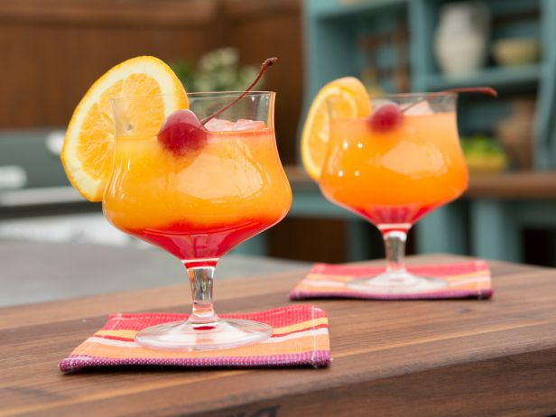

Tequila Sunrise

Total Time:
5 min
Prep:
5 min
Difficulty: Easy
Ingredients
* 1 1/2 ounces tequila
* 3/4 cup orange juice
* 3/4 ounce grenadine syrup
* Orange slice, for garnish
* High-quality maraschino cherry, such as Luxardo, for garnish
Instruction
In a highball glass filled with ice, pour in the tequila and orange juice.
Slowly pour the grenadine into the glass over the back of a spoon or by drizzling it down the side of the glass, allowing it to settle at the bottom.
Garnish with an orange slice and maraschino cherry.